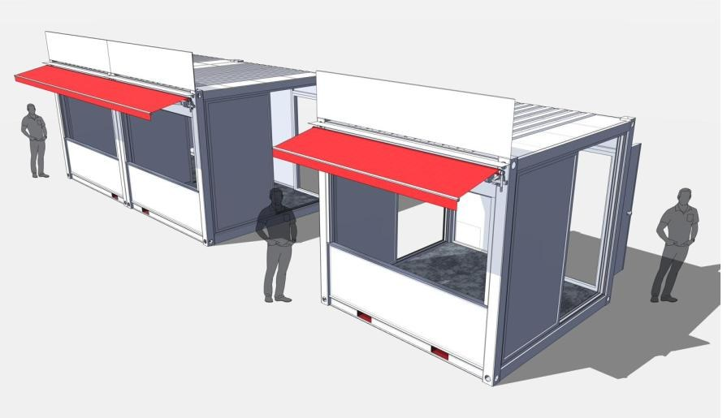

Stone 01 · 모바일 모듈러 키친
현장에 그대로 옮겨 세우는 완결된 상업용 주방입니다
K테이너 · 푸드트럭으로 구성됩니다. 이 사업의 핵심 인프라인 K테이너는 파이브스톤스가 가장 크게 투자한 Flagship Project로, 나머지 네 개 사업영역의 품질과 원가를 결정합니다.
현장 검증
서울 밤도깨비야시장 — 흑백요리사 출연 셰프 푸드트럭 운영 4개소 · 연 180회
K테이너푸드트럭프리미엄 33대
자세히 보기 →